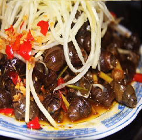
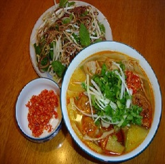

-

ỐC HÚT, MÍT TRỘN ĐÀ NẴNG
Những món ăn chơi dân dã này chính là một nét riêng đặc biệt của Đà Nẵng..
-
RAM CUỐN CẢI
Ram cuốn cải, một trong những món ăn vặt được chuộng nhất ở ĐN vào mùa này...
-
MÌ QUẢNG ĐÀ NẴNG
Nhắc đến Quảng Nam Đà Nẵng, chắc hẳn không ai..
-
TÔM BIỂN ĐÀ NẴNG
Đà Nẵng có thể coi là điểm hội tụ của các món ngon ba miền...
-

GỎI CÁ NAM Ô
Là món ăn Đà Nẵng nổi tiếng bao đời, gỏi cá Nam Ô là đặc sản....
-

CHẢ BÒ ĐÀ NẴNG
Từ lâu chả bò đã là món ăn Đà Nẵng nổi danh trên khắp xứ quảng...
-
TRÉ BÀ ĐỆ
Dân xứ Huế và Quảng Nam, Đà Nẵng có một món ăn rất riêng...
-

BÚN CHẢ CÁ
Là món ăn đặc trưng của miền Trung nhưng...
-
BÊ THUI CẦU MỐNG
Một trong những đặc sản ẩm thực Đà Nẵng...
-

ĐẶC SẢN CƠM GÀ
“Cơm gà” là một món đặc sản của xứ Quảng....
-
ĐẶC SẢN BÁNH XÈO
Những ai đã từng đến thăm Đà Nẵng....
-

BÁNH BÈO, BÁNH ƯỚT
Từ lâu, bánh bèo, bánh ướt đã trở thành món ăn...
-
BÁNH TRÁNG THỊT HEO
Món bánh tráng cuốn thịt heo đang được người...